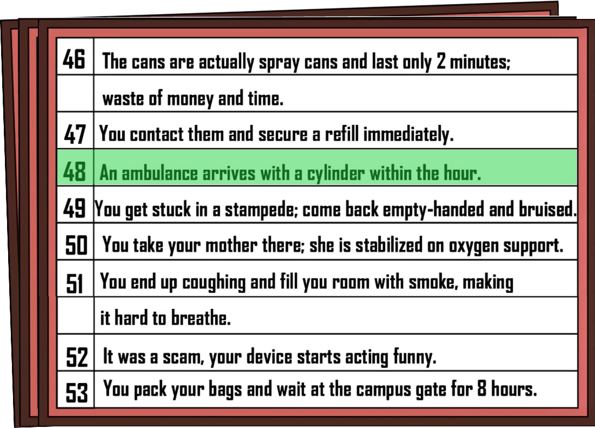
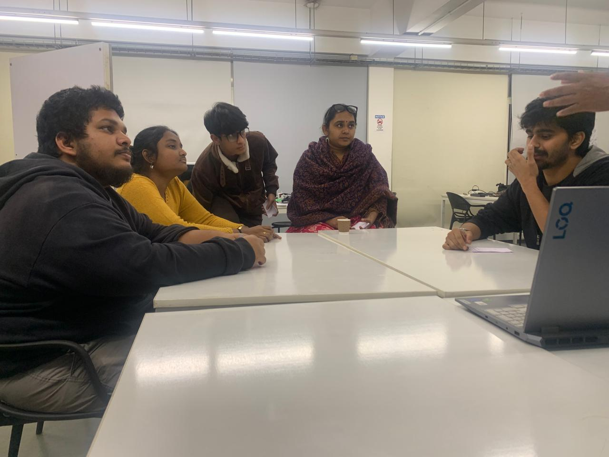
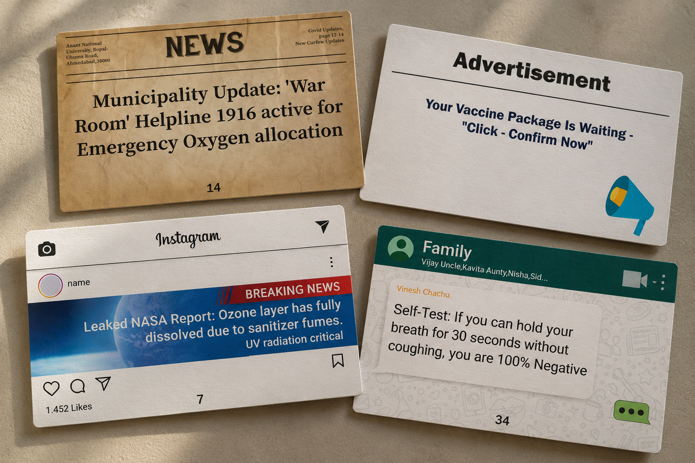

A forward is easy. Living with its consequence is not.
Created by a five-designer team in a 48-hour Game for Change jam, Viral Siyappa turns a familiar habit into a timed group decision: skim a mixed feed, pass cards along, argue for one lead, and reveal what the group's choice sets in motion.
ROLE
Game Designer · Visual Designer · Sprint Coordinator
TEAM
5 designers
DURATION
48 hours
TOOLS
Figma · Photoshop · Illustrator
01 / THE PROBLEM
During a crisis, everything can arrive in the same feed.
COVID-19 made the stakes of forwarded information feel immediate: advice, rumours, scams and news clips could travel through the same chats and social feeds.
We started from a behaviour people recognised. A WhatsApp forward, an Instagram post, a tweet or a news segment could all arrive with the same urgency, even when the quality of the information was very different. Claims about home remedies such as kadha sat alongside public-health updates and speculation. The problem was not simply access to information; it was how quickly people could accept, act on and pass it along.
For the Game for Change brief, we wanted to turn that habit into something players could feel. Instead of giving them a lecture about fact-checking, the game makes them choose under pressure, forward information to others and face a shared outcome.
INTENDED PLAYERS
People familiar with social media and group chats, especially those who remember the information overload around COVID-19. The format is a cooperative tabletop experience for a small group.
INTENDED IMPACT
Build awareness of how unchecked information can spread, shape decisions and leave someone dealing with the consequences. The game was designed to prompt reflection, not to measure behaviour change.
Viral refers to how quickly a message can spread. Siyappa is Punjabi colloquial slang for a mess or commotion. The name came after the concept: a viral mess created when information travels faster than it is judged.
02 / DESIGN CHALLENGE
Make the act of forwarding playable.
The game had to make uncertainty, social pressure and shared responsibility tangible without turning into a fact-checking quiz with one obvious answer.
DESIGN QUESTION
How might a cooperative game help players notice how they select, forward and act on information when there's pressure to respond quickly?
01Skim the feedMixed formats and uneven credibility.
→
02Forward a leadEach player passes on what seems useful.
→
03Own the outcomeThe group lives with one shared choice.
48-HOUR SPRINT / IDEA SELECTION
We didn't land on Viral Siyappa immediately. As a team of five, we sketched three or four other directions, then used a quick pros-and-cons list to compare the idea, its mechanics and what we could realistically make in the time available.
013–4 other ideasExplore different responses to the Game for Change brief.
→
02Pros, cons & mechanicsCheck the premise and whether the game could be made playable in 48 hours.
→
03Viral SiyappaCommit to a concept with a clear action, shared decision and visible consequence.
03 / DESIGN DECISIONS
The mechanics make the metaphor physical.
Each rule mirrors a familiar part of the misinformation chain, from receiving a message to accepting collective responsibility for the result.
01 / MOTIVE CARD
Give the group one urgent problem.
The Motive Card frames a scenario that needs a response. It gives every player the same goal while leaving the best response open to debate.
02 / PASS LEFT
Make forwarding the rule.
After choosing a card, players pass the remaining hand to the left. The information keeps moving, and each player makes the next choice from a different set.
03 / CHAT BOARD + CHART
Make the group answer for one choice.
The Chat Board makes the options visible. The Consequence Chart reveals whether the card the group backs leads to a solution or a ridiculous failure.
WHY COOPERATIVE?
Misinformation moves between people, not just between screens. Passing cards left turns forwarding into a physical action; the shared vote then makes the group responsible for what it chooses to believe and pass on.
04 / GAME LOOP
Receive. Forward. Agree. Face the outcome.
Four phases turn a stream of mixed information into one public choice. The illustrations below mirror the rule pamphlet: a quick visual cue, then a short explanation of what players do and why it matters.
PHASE 013 MIN
The Panic
Pick one of the 10 cards that could answer the Motive Card. Keep it face-down, pass the rest left, and repeat until you have three selected cards.
Why it mattersPassing left turns forwarding into a physical habit, while the timer creates pressure to choose.
PHASE 021 MIN
The Forward
From your three selected cards, choose the one you think is strongest and place it face-up on the Chat Board: the game's main group chat.
Why it mattersIndividual judgements become visible options the whole group can compare.
PHASE 03TIMED DEBATE
Consensus
Debate the options on the board. Players explain, challenge and convince until everyone can commit to one final card before time runs out.
Why it mattersThe decision becomes collective, not just the opinion of whoever spoke first.
PHASE 04REVEAL
The Verdict
Flip the Chat Board and match the chosen card number to the Consequence Chart. The group discovers whether its response helps or makes the situation worse.
Why it mattersThe consequence makes the cost of a careless forward visible-and often absurd.
THE DESIGN LOGIC
Private filtering → public debate → shared consequence. The game doesn't stop at asking “Which card looks right?” It asks the group to defend a choice, commit to it, and see what happens next.
05 / GAME COMPONENTS
Each component has a job in the system.
The physical pieces make incoming information, shared context and consequences distinct.
50 CARDSNews cards
A mixed feed of claims and possible leads, from helpful information to rumours and scams.
3 CARDSMotive cards
A scenario establishes the common goal for the group.
1 DOUBLE-SIDED BOARDChat board
Selected news is forwarded to a shared space; the reverse reveals the corresponding consequence.

1 CHARTConsequence chart
Checks the final card and makes the result of the group's choice visible.
ALSO REQUIRED
A timer, using a phone, keeps the selection and consensus phases moving.
06 / HOW TO PLAY
Three phases. One final decision.
Explore the rules from the first card selection to the final consequence.
PHASE 01 / 3 MINUTES
Filter through the noise.
Each player starts with a 10-card hand. Choose one that might address the shared motive, keep it face-down, pass the remaining hand to the left, and choose again from the new hand. Repeat until each player has three selected cards. The passing mechanic deliberately echoes forwarding a message.
What this createsSelection is a trade-off: keep the lead you want, then decide again with a different hand.
PHASE 02 / 1 MINUTE · THE GROUP CHAT
Forward the strongest lead.
Within one minute, each player chooses the strongest of their three selected cards and places it face-up on the Chat Board. Individual judgements become the shared set of leads the whole group can inspect.
What changesThe group can compare leads side by side, rather than relying on one player's hand.
PHASE 03 / TIMED DISCUSSION
Discuss, debate and agree.
The group discusses the face-up cards, questions which lead best addresses the motive and agrees on one final card before the timer runs out.
What mattersThe team must commit to one shared response before the timer runs out.
THE VERDICT / CONSEQUENCE CHART
The choice has an outcome.
Flip the Chat Board and match the chosen card number to the Consequence Chart. A useful response can win the group the game; a harmful or misleading choice can lead to a bizarre failure. The humour is part of how the consequence lands.
✓SuccessVerified solution
×FailureNegative consequence
The exact outcome depends on the card chosen and its entry in the printed Consequence Chart. The interface here explains the rules; it is not a playable digital version of the board game.
07 / PROTOTYPE & TESTING
The prototype changed the pace, not just the polish.
Five designers, 48 hours, and three rounds of playtesting to get the core loop working.
We first compared three or four concepts against the Game for Change theme with a quick pros-and-cons list and a check of each idea’s mechanics. Once we chose Viral Siyappa, we prototyped the loop with paper cards and a board before committing to the final visual system.
01
Compare directions
Compare three or four alternative concepts with a pros-and-cons list, checking the premise and mechanic feasibility against a 48-hour deadline.
02
Make the loop playable
Use paper cards, a Motive Card and a board to test selection, passing, discussion and outcome reveal before visual polish.
03
Playtest and tune the pace
Run three playtest rounds and watch whether the rules created the urgency the concept needed.
04
Build the printed kit
Bring the social-feed cards, Motive Cards, Chat Board, Consequence Chart and rule pamphlet into one visual system.
WHAT PLAYTESTING CHANGED
The earliest version had no timer. Players spent too long weighing options, which weakened the panic and urgency the game was meant to create. We introduced a time limit for selection and rewrote the Motive Card narratives so each scenario called for a quick response.
WHAT I WOULD TEST NEXT
Capture the exact moments players hesitate, whether the left-pass mechanic is clear without facilitation, and how players explain their final vote. I would also check whether the consequence feels fair, funny and understandable-not just surprising.
PAPER PROTOTYPE / MECHANICS BEFORE POLISHPLAYTESTING / THREE ROUNDS

IN USE / GROUP DISCUSSION
08 / FINAL GAME
A printable kit built around one shared decision.
The finished system turns a familiar social-media habit into a cooperative, timed loop: pick, pass, debate and face the consequence of one shared choice.
01 / THE SYSTEM
The card set, board and visual language are designed to work as one experience.

02 / THE INFORMATION STREAM
Different formats sit together, asking players to judge what is relevant and trustworthy.
03 / THE CONSEQUENCE CHART
The final choice is checked against a printed outcome rather than ending at the vote.
“The challenge wasn't generating ideas. It was deciding which ideas the system actually needed.”
Viral Siyappa taught me that the rules themselves can carry the message. Passing the hand left makes forwarding physical; the shared Chat Board turns personal judgement into a group position; and the Consequence Chart refuses to let the group stop at “we picked one.”
The most concrete iteration came from pacing: without a timer, players considered options for too long and the intended urgency faded. Adding time pressure and sharpening the Motive Card scenarios helped bring the mechanic closer to the feeling the game was built around. I would document future playtests more systematically so every further change could be traced to a specific observation.
NEXT ITERATION
Test rule clarity, track hesitation points and record which edits follow from each observation. Then test whether players carry the central question beyond the table: what happens when we pass information on before checking it?
EXPLORE MORE WORK
More work
Other projects across digital experiences, research and systems design.